周一 · 推
胸肩三头- 03 地板卧推4×6–10
- 05 站姿推举3×8–12
- 10 窄距地板卧推3×8–12
- 12 侧平举3×12–15
- 14 头后臂屈伸3×10–15
Dumbbell full-body plan
面向健康成年人的哑铃训练图鉴，包含初中级每周 3 练与中级每周 5 练两套方案。完整覆盖胸、背、肩、手臂、臀腿、小腿和核心，只需哑铃与一块可躺卧的地面。
Intermediate · 5 training days
建议已经能稳定完成每周 3 练、动作熟练且恢复良好时采用。周四和周日休息，让同一肌群在主要训练之间获得恢复。
GIF 仅用于理解轨迹；训练时以稳定、无痛的动作范围为准。
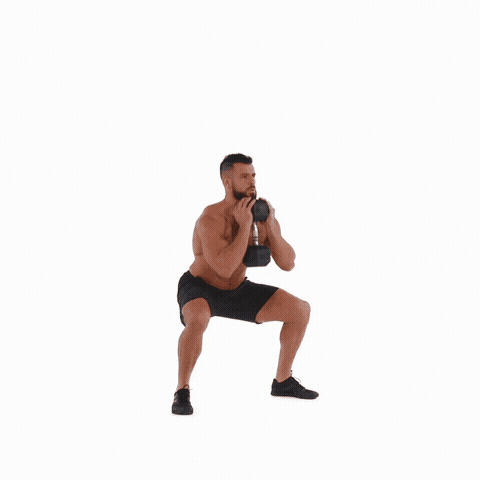
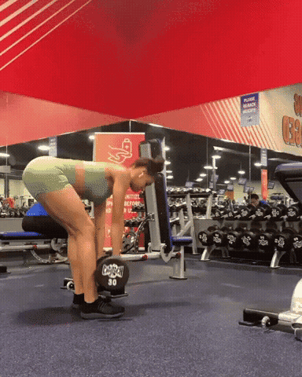
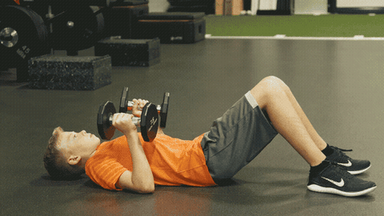
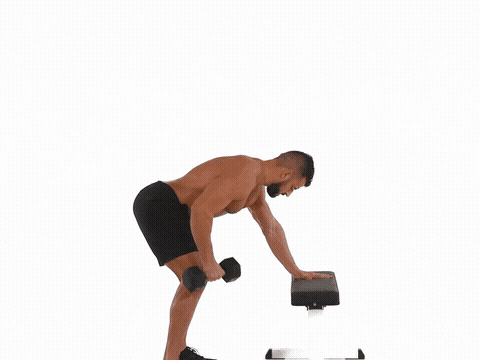
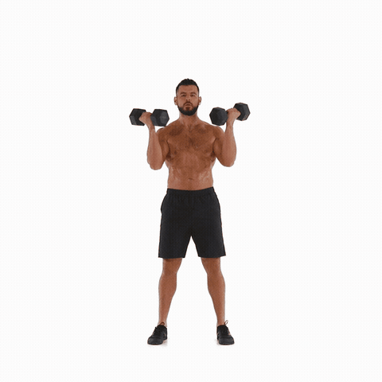
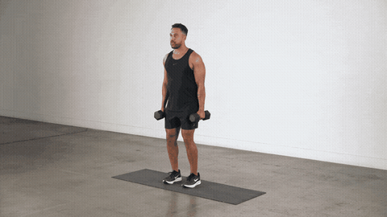
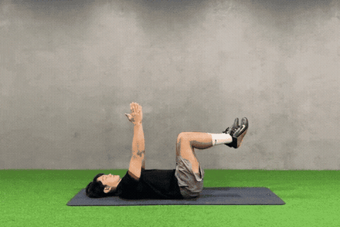
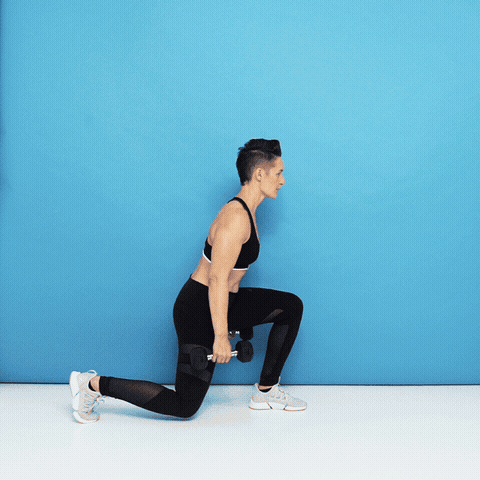
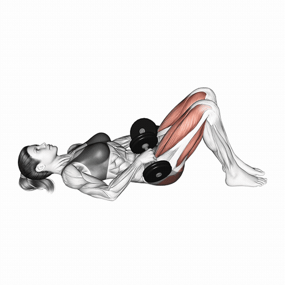
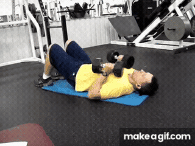
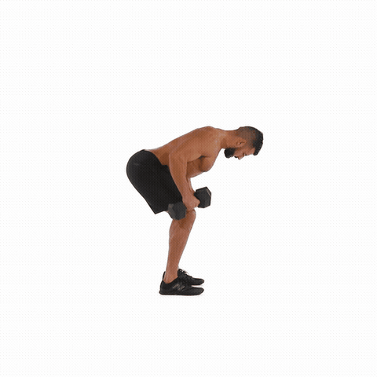
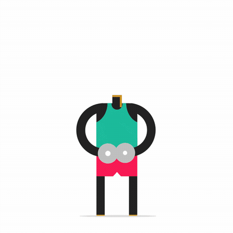
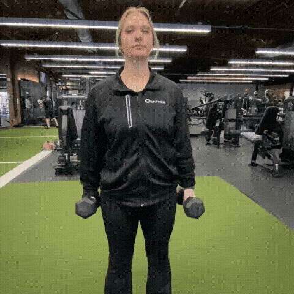
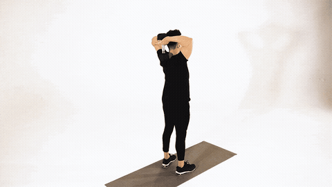
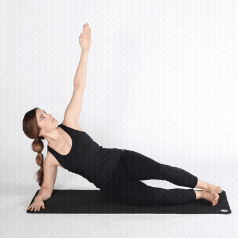
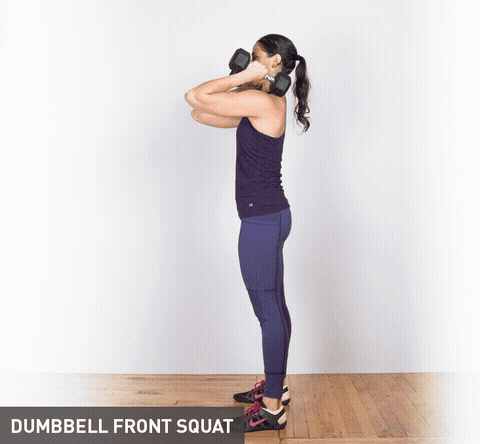
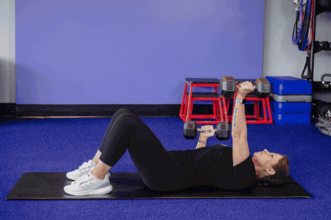
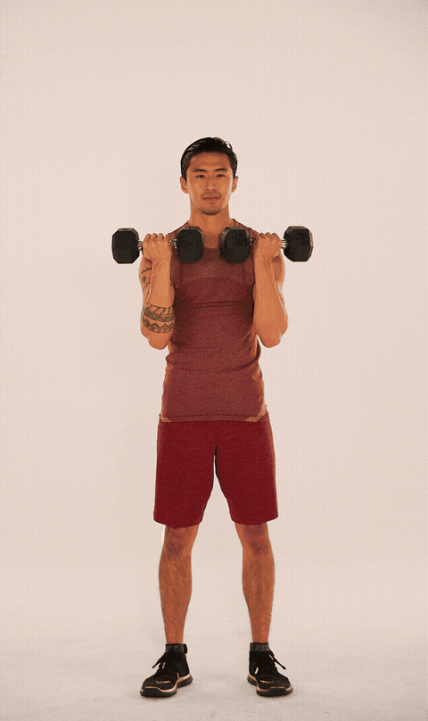
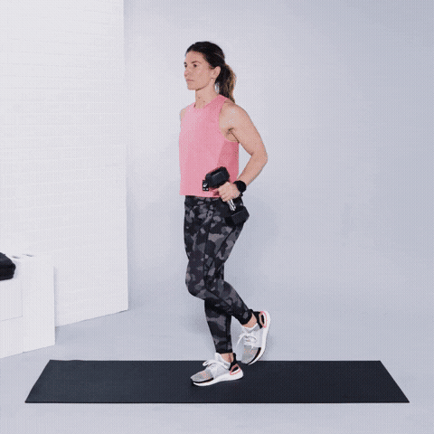
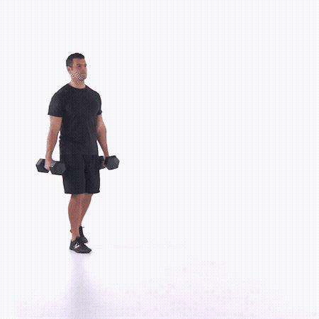
每组结束时还能保持标准动作再做约 2–3 次。最后几次应明显吃力，但不需要练到力竭。
深蹲、硬拉、卧推和划船休息 90–120 秒；小肌群与核心动作休息 45–75 秒。
连续两次达到次数上限且仍有余力，下次增加重量；固定重量可放慢下放速度或增加次数。